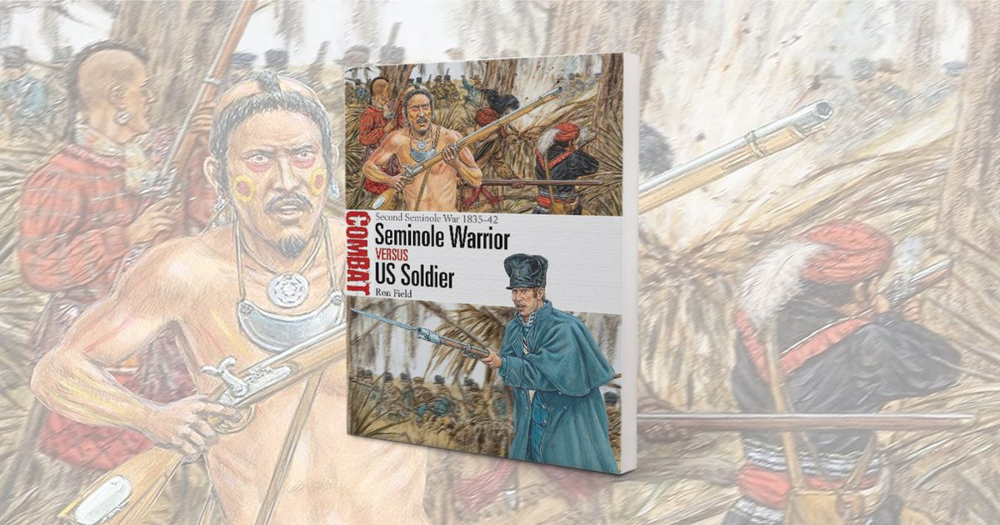

Семинолы научили американских солдат одной или двум вещам о партизанской войне
Во время Второй семинольской войны 1835-1842 годов и в то время, когда армия разведывала Запад, эти воины с Юга оказались грозными.

Во время Второй семинольской войны 1835-1842 годов и в то время, когда армия разведывала Запад, эти воины с Юга оказались грозными.